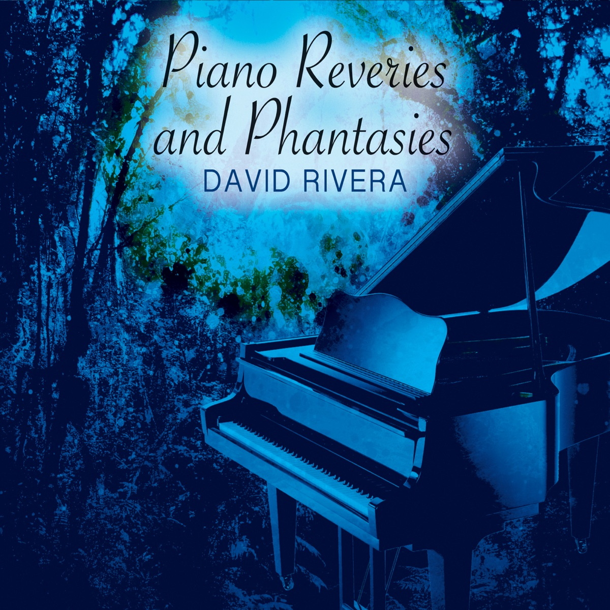

Piano Reveries and Phantasies
2015 · solo piano
A leaf on a journey, a meditating mantis, first light. Twenty-two small nature pieces. Leaf On a Journey Through Time is the one that already found a few people.
This week’s piece is Flowers Sneezing. A small favorite that has been sitting quietly here since 2015.
I’m David Rivera. Florida neoclassical composer. Seven piano solo and ambient albums that fuse minimalism and electronica. The music is piano at heart. Subtle melodies for overlooked moments, sometimes with ethereal instruments, vocals, or synths. A place to slow down and take the time to listen.
I’m back at the instrument. Walk this small nature for now. More music is coming. Be on the lookout.
When I’m not composing, I sail. This page is only this album. If you want the room, press play.
The pieces
- Leaf On a Journey Through Time3:57
- A Pondering Spider Weaves5:13
- Song of the Grasshopper3:11
- Beetle in Slow Motion3:00
- Meditating Mantis3:46
- Flowers Sneezing2:37
- Dance of the Ant3:47
- Twisting Trail3:16
- Delicious Sunset3:04
- Om Provisation7:58
- Enchanted Forest3:28
- First Light4:22
- Thoughts of the Flying Dandelion3:23
- Sixteenhundred Eighty Five1:54
- Whispering Petals Stir3:42
- Graceful Hummingbird3:01
- Lake of Golden Wisdom2:01
- Little Waterfall Tickled Pink2:40
- Mellifluous Swan2:46
- Scrumptious Morning Strawberry2:03
- Hop of the Happy Lizard1:54
- Sensitive Butterfly Effect4:30
The other albums
- Melodic Subtlety – Solo Piano (2006)
- Piano In Colors (2007)
- Tantalizing Proof (2009)
- Clean Calm Piano (2010)
- Where In The World Is Diane (2012)
- Smitten with the Muses (2014)
New work